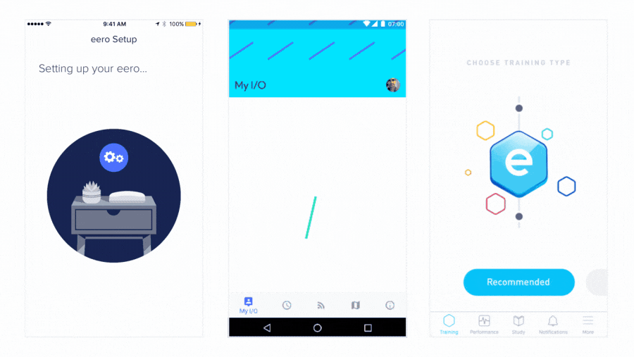

- 00 开篇词 锚定一个点，然后在这个点上深耕.md
- 01 建立你自己的iOS开发知识体系.md
- 02 App 启动速度怎么做优化与监控？.md
- 03 Auto Layout 是怎么进行自动布局的，性能如何？.md
- 04 项目大了人员多了，架构怎么设计更合理？.md
- 05 链接器：符号是怎么绑定到地址上的？.md
- 06 App 如何通过注入动态库的方式实现极速编译调试？.md
- 07 Clang、Infer 和 OCLint ，我们应该使用谁来做静态分析？.md
- 08 如何利用 Clang 为 App 提质？.md
- 09 无侵入的埋点方案如何实现？.md
- 10 包大小：如何从资源和代码层面实现全方位瘦身？.md
- 11 热点问题答疑（一）：基础模块问题答疑.md
- 12 iOS 崩溃千奇百怪，如何全面监控？.md
- 13 如何利用 RunLoop 原理去监控卡顿？.md
- 14 临近 OOM，如何获取详细内存分配信息，分析内存问题？.md
- 15 日志监控：怎样获取 App 中的全量日志？.md
- 16 性能监控：衡量 App 质量的那把尺.md
- 17 远超你想象的多线程的那些坑.md
- 18 怎么减少 App 电量消耗？.md
- 19 热点问题答疑（二）：基础模块问题答疑.md
- 20 iOS开发的最佳学习路径是什么？.md
- 21 除了 Cocoa，iOS还可以用哪些 GUI 框架开发？.md
- 22 细说 iOS 响应式框架变迁，哪些思想可以为我所用？.md
- 23 如何构造酷炫的物理效果和过场动画效果？.md
- 24 A_B 测试：验证决策效果的利器.md
- 25 怎样构建底层的发布和订阅事件总线？.md
- 26 如何提高 JSON 解析的性能？.md
- 27 如何用 Flexbox 思路开发？跟自动布局比，Flexbox 好在哪？.md
- 28 怎么应对各种富文本表现需求？.md
- 29 如何在 iOS 中进行面向测试驱动开发和面向行为驱动开发？.md
- 30 如何制定一套适合自己团队的 iOS 编码规范？.md
- 31 iOS 开发学习资料和书单推荐.md
- 32 热点问题答疑（三）.md
- 33 iOS 系统内核 XNU：App 如何加载？.md
- 34 iOS 黑魔法 Runtime Method Swizzling 背后的原理.md
- 35 libffi：动态调用和定义 C 函数.md
- 36 iOS 是怎么管理内存的？.md
- 37 如何编写 Clang 插件？.md
- 38 热点问题答疑（四）.md
- 39 打通前端与原生的桥梁：JavaScriptCore 能干哪些事情？.md
- 40 React Native、Flutter 等，这些跨端方案怎么选？.md
- 41 原生布局转到前端布局，开发思路有哪些转变？.md
- 42 iOS原生、大前端和Flutter分别是怎么渲染的？.md
- 43 剖析使 App 具有动态化和热更新能力的方案.md
- 用户故事 我是如何学习这个专栏的？.md
- 结束语 慢几步，深几度.md
23 如何构造酷炫的物理效果和过场动画效果？
你好，我是戴铭。今天，我要和你分享的是如何为你 App 添加酷炫的动画效果。
不论是iOS开发，还是Android开发，现在的动画库差不多都需要手动去编写动画代码。这样的话，iOS 和 Android 开发者就需要分别去编写适合自己系统的代码。而且，手动编写动画的代码也非常复杂，不容易维护，很多动画细节的调整还需要和动画设计师不断沟通打磨，尤其是千行以上的动画代码编写、维护、沟通的成本巨大。
手动编写动画代码，除了会影响到开发者外，动画设计师也难以幸免。一款产品适配的平台越多，动画设计师设计走查的周期就越长，相应的动画成本就越高。同时，动画设计师很兴奋地设计出一套炫酷地动画效果后，在要通过开发者实现出来时，却因为工时评估过长而一再被简化，甚至被直接取消。试想一下，以后他还会动力十足地去设计酷炫的动画效果吗？
所以，你会发现现在有酷炫的动画效果的 App 非常少，而且多是出自个人开发者之手。那么，这就提高了对个人开发者的要求，不但要求他代码写得好，还要能够设计出好的动画效果。但是，这样的人才也是不可多得。
那，到底有没有什么办法能够把动画制作和App开发隔离开，专人做专事，而且还能使得多个平台的动画效果保持一致呢？
办法总比困难多。接下来，我们就一起看看如何实现的问题吧。
Lottie
Lottie 框架就很好地解决了动画制作与开发隔离，以及多平台统一的问题。
Lottie 是 Airbnb 开源的一个动画框架。Lottie 这个名字来自于一名德国导演洛特·赖尼格尔（Lotte Reiniger），她最著名的电影叫作“阿赫迈德王子历险记（The Adventures of Prince Achmed）”。这个框架和其他的动画框架不太一样，动画的编写和维护将由动画设计师完成，完全无需开发者操心。
动画设计师做好动画以后，可以使用After Effects将动画导出成JSON文件，然后由Lottie 加载和渲染这个JSON文件，并转换成对应的动画代码。由于是JSON格式，文件也会很小，可以减少 App 包大小。运行时还可以通过代码控制更改动画，比如更改颜色、位置以及任何关键值。另外，Lottie 还支持页面切换的过场动画（UIViewController Transitions）。
下面的两张动画，就是使用Lottie 做出来的效果。-

上面这些动画，就是由动画设计师使用 After Effects 创作，然后使用 Bodymovin进行导出的，开发者完全不用做什么额外的代码工作，就能够使用原生方式将其渲染出来。
Bodymovin 是 Hernan Torrisi 做的一个 After Effects 的插件，起初导出的JSON文件只是通过 JavaScript 在网页中进行动画的播放，后来才将JSON文件的解析渲染应用到了其他平台上。
那么，如何使用 Bodymovin 呢？
Bodymovin
你需要先到Adobe官网下载Bodymovin插件，并在 After Effects 中安装。使用 After Effects 制作完动画后，选择 Windows 菜单，找到 Extensions 的 Bodymovin 项，在菜单中选择 Render 按钮就可以输出JSON文件了。
LottieFiles网站还是一个动画设计师分享作品的平台，每个动画效果的JSON文件都可下载使用。所以，如果你现在没有动画设计师配合的话，可以到这个网站去查找并下载一个 Bodymovin 生成的JSON文件，然后运用到工程中去试试效果。
在 iOS 中使用 Lottie
在iOS开发中使用Lottie也很简单，只要集成 Lottie 框架，然后在程序中通过 Lottie 的接口控制 After Effects 生成的动画 JSON 就行了。
首先，你可以通过 CocoaPods 集成 Lottie 框架到你工程中。Lottie iOS 框架的 GitHub 地址是https://github.com/airbnb/lottie-ios/，官方也提供了可供学习的示例。
然后，快速读取一个由Bodymovin 生成的JSON文件进行播放。具体代码如下所示：
LOTAnimationView *animation = [LOTAnimationView animationNamed:@"Lottie"];
[self.view addSubview:animation];
[animation playWithCompletion:^(BOOL animationFinished) {
// 动画完成后需要处理的事情
}];
利用 Lottie 的动画进度控制能力，还可以完成手势与动效同步的问题。动画进度控制是 LOTAnimationView 的 animationProgress 属性，设置属性的示例代码如下：
CGPoint translation = [gesture getTranslationInView:self.view];
CGFloat progress = translation.y / self.view.bounds.size.height;
animationView.animationProgress = progress;
Lottie 还带有一个 UIViewController animation-controller，可以自定义页面切换的过场动画，示例代码如下：
#pragma mark -- 定制转场动画
// 代理返回推出控制器的动画
- (id<UIViewControllerAnimatedTransitioning>)animationControllerForPresentedController:(UIViewController *)presented presentingController:(UIViewController *)presenting sourceController:(UIViewController *)source {
LOTAnimationTransitionController *animationController = [[LOTAnimationTransitionController alloc] initWithAnimationNamed:@"vcTransition1" fromLayerNamed:@"outLayer" toLayerNamed:@"inLayer" applyAnimationTransform:NO];
return animationController;
}
// 代理返回退出控制器的动画
- (id<UIViewControllerAnimatedTransitioning>)animationControllerForDismissedController:(UIViewController *)dismissed {
LOTAnimationTransitionController *animationController = [[LOTAnimationTransitionController alloc] initWithAnimationNamed:@"vcTransition2" fromLayerNamed:@"outLayer" toLayerNamed:@"inLayer" applyAnimationTransform:NO];
return animationController;
}
Lottie 在运行期间提供接口和协议来更改动画，有动画数据搜索接口 LOTKeyPath，以及设置动画数据的协议 LOTValueDelegate。详细的说明和使用示例代码，你可以参看官方 iOS 教程。
多平台支持
Lottie 支持多平台，除了 支持iOS，还支持 Android 、React Native和Flutter。除了官方维护的这些平台外，Lottie还支持Windows、Qt、Skia 。陈卿还实现了 React、Vue和Angular对 Lottie的支持，并已将代码放到了GitHub上。
有了这么多平台的支持，对于动画设计师来说，可以安心做动画，只要简单地转换就可以完美展现动画效果，再也不用担心到开发者那里动画效果被大打折扣了。而对于开发者来说，再也不用写那些难以维护的大量动效代码了，而且App安装包的体积还变小了。
那么，这么神奇的框架，在 iOS 里到底是怎么实现的呢？接下来，我们就看下Lottie的实现原理吧。
通过原理的学习，你会掌握通过 JSON 来控制代码逻辑的能力。比如，你可以把运营活动流程的代码逻辑设计为一种规范，再设计一个拖拽工具用来创建运营活动流程，最后生成一份表示运营活动逻辑的 JSON，下发到 App 内来开启新的运营活动。
Lottie 实现原理
实际上，Lottie iOS在 iOS 内做的事情就是将 After Effects 编辑的动画内容，通过JSON文件这个中间媒介，一一映射到 iOS 的 LayerModel、Keyframe、ShapeItem、DashElement、Marker、Mask、Transform 这些类的属性中并保存了下来，接下来再通过 CoreAnimation 进行渲染。这就和你手动写动画代码的实现是一样的，只不过这个过程的精准描述，全部由动画设计师通过 JSON文件输入进来了。
Lottie iOS 使用系统自带的 Codable协议来解析JSON文件，这样就可以享受系统升级带来性能提升的便利，比如 ShapeItem 这个类设计如下：
// Shape Layer
class ShapeItem: Codable {
/// shape 的名字
let name: String
/// shape 的类型
let type: ShapeType
// 和 json 中字符映射
private enum CodingKeys : String, CodingKey {
case name = "nm"
case type = "ty"
}
// 初始化
required init(from decoder: Decoder) throws {
let container = try decoder.container(keyedBy: ShapeItem.CodingKeys.self)
self.name = try container.decodeIfPresent(String.self, forKey: .name) ?? "Layer"
self.type = try container.decode(ShapeType.self, forKey: .type)
}
}
通过上面代码可以看出，ShapeItem 有两个属性，映射到JSON的字符键值是 nm 和 ty，分别代表 shape 的名字和类型。下面，我们再一起看一段 Bodymovin 生成的JSON代码：
{"ty":"st","fillEnabled":true,"c":{"k":[{"i":{"x":[0.833],"y":[0.833]},"o":{"x":[0.167],"y":[0.167]},"n":["0p833_0p833_0p167_0p167"],"t":22,"s":[0,0.65,0.6,1],"e":[0.76,0.76,0.76,1]},{"t":36}]},"o":{"k":100},"w":{"k":3},"lc":2,"lj":2,"nm":"Stroke 1","mn":"ADBE Vector Graphic - Stroke"}
在这段JSON代码中，nm 键对应的值是 Stroke 1，ty 键对应的值是 st。那我们再来看看，st 是什么类型。
我们知道，ShapeType 是个枚举类型，它的定义如下：
enum ShapeType: String, Codable {
case ellipse = "el"
case fill = "fl"
case gradientFill = "gf"
case group = "gr"
case gradientStroke = "gs"
case merge = "mm"
case rectangle = "rc"
case repeater = "rp"
case round = "rd"
case shape = "sh"
case star = "sr"
case stroke = "st"
case trim = "tm"
case transform = "tr"
}
通过上面的枚举定义，可以看到 st 对应的是 stroke 类型。
Lottie 就是通过这种方式，定义了一系列的类结构，可以将JSON数据全部映射过来。所有映射用的类都放在 Lottie 的 Model 目录下。使用 CoreAnimation 渲染的相关代码都在 NodeRenderSystem 目录下，比如前面举例的 Stoke。
在渲染前会生成一个节点，实现在 StrokeNode.swift 里，然后对 StokeNode 这个节点渲染的逻辑在 StrokeRenderer.swift 里。核心代码如下：
// 设置 Context
func setupForStroke(_ inContext: CGContext) {
inContext.setLineWidth(width) // 行宽
inContext.setMiterLimit(miterLimit)
inContext.setLineCap(lineCap.cgLineCap) // 行间隔
inContext.setLineJoin(lineJoin.cgLineJoin)
// 设置线条样式
if let dashPhase = dashPhase, let lengths = dashLengths {
inContext.setLineDash(phase: dashPhase, lengths: lengths)
} else {
inContext.setLineDash(phase: 0, lengths: [])
}
}
// 渲染
func render(_ inContext: CGContext) {
guard inContext.path != nil && inContext.path!.isEmpty == false else {
return
}
guard let color = color else { return }
hasUpdate = false
setupForStroke(inContext)
inContext.setAlpha(opacity) // 设置透明度
inContext.setStrokeColor(color) // 设置颜色
inContext.strokePath()
}
这段代码看起来是不是就很熟悉了？
如果是手写动画，这些代码就需要不断重复地写。使用第三方库去写动画的话，也无非就是多封装了一层，而属性的设置、动画时间的设置等，还是需要手动添加很多代码来完成。
但是，使用 Lottie 后，你就完全不用去管这些代码了，只需要在 After Effects 那设置属性、控制动画时间就好了。
小结
今天这篇文章，我分享了一个制作动画的利器 Lottie，并和你说了如何在 iOS 中使用，以及它的实现原理。听到这，你一定感到奇怪， iOS 开发中还有很多优秀的动画框架，比如 Pop，但是为什么我只跟你说了 Lottie 呢？
因为在我看来， Lottie 这样的工作流程或许就是未来的趋势，就像 iOS 现在的发展趋势一样，越来越多的业务逻辑不再需要全部使用 Objective-C 或 Swift 来实现了，而是使用JavaScript 语言或者 DSL 甚至是工具来描述业务，然后将描述业务的代码转换成一种中间代码，比如 JSON，不同平台再对相同的中间代码进行解析处理，以执行中间代码描述的业务逻辑。
这样做不仅可以减轻 App 包的大小，实现多端逻辑的统一处理，还可以让团队分工更加明确，一部分人专门开发业务代码，另一部分人负责端内稳定性、质量把控、性能提升工作的建设。
课后作业
相信你看到这，一定已经忍不住想小试身手了，那么就请你到 LottieFiles网站下载一个JSON文件，做一个 Lottie Demo 感受下吧。
感谢你的收听，欢迎你在评论区给我留言分享你的观点，也欢迎把它分享给更多的朋友一起阅读。
© 2019 - 2023 Liangliang Lee. Powered by gin and hexo-theme-book.